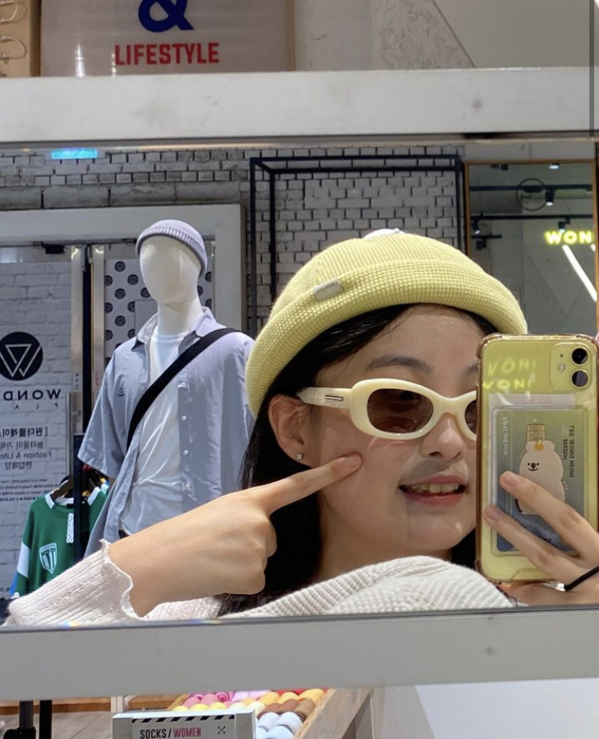

안녕하세요! 저는 한국에 거주하는 20살 대학생 이정흠입니다.
저는 요즘 채식주의에 대한 열정과 관심을 가지고 있습니다.
하지만 한국 사회에서 채식은 여전히 비주류의 문화로, 관련 정보나 지식을 쌓기 어려운 것은 물론 사람들의 편견과 사회적 분위기 속에서 올바르게 존중받지 못하고 있습니다.
저는 채식주의를 통해 얻을 수 있는 이점들을 소중히 여기며, 더 나은 세상을 만들기 위해 노력해 보고 싶습니다.
저의 선택이 다른 사람들과 환경에 영감을 줄 수 있기를 바라며, 채식주의자로서의 삶을 윤택하게 만들기 위한 웹사이트를 개발하고자 했습니다.
이 사이트가 여러분들에게 채식주의에 대한 다양한 종류의 정보를 제공하기를 바랍니다.